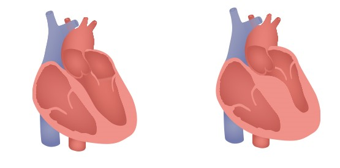

What is Congestive Heart Failure?
Congestive Heart Failure (CHF) is a highly prevalent heart condition
in which the heart is unable to pump blood properly.
Heart failure is chronic and has a high mortality rate. Additionally
, CHF greatly affects the daily lives of those who have it.
Over 26 million people worldwide have CHF, and the number of cases
are continuously increasing. (https://www.ncbi.nlm.nih.gov/pmc/articles/PMC5494150/)
When the heart is unable to properly pump blood, it often backs up
in parts of the body like the lower legs and major organs like the
lungs. There are many scenarios that cause this failure, which is
part of why it is so common. This public service announcement will go over the different
symptoms of CHF, how it affects the body, its different stages,
and treatment.
Symptoms
Types of Heart Failure
Heart failure can either be due to systolic or diastolic failure. Each type of failure has to do with how much blood the heart can take in or output. Systolic Heart Failure is when the heart is unable to pump out enough blood. This could be due to the heart muscle being too weak to pump out blood. Diastolic Heart Failure is when the heart is unable to fill completely with blood. This could be due to stiff muscle not being able to relax, or thicker tissue in that ventricle. The heart failure is also classified by the left and right sides, where the failure is being caused. Oftentimes, the failure of one side will lead to problems with both.
Stages
CHF is split into stages based on the severity of the case.
| Stage A | This stage indicates that a patient is at high risk for heart failure. They may have one of the conditions that leads to CHF, or have a family history. |
| Stage B | In this stage, a patient has a heart dysfunction but has yet to experience symptoms of CHF. |
| Stage C | Patients begin to experience symptoms of CHF in stage C. This can include fatigue, weakness, and shortness of breath. |
| Stage D | The last stage of heart failure is when patients are experiencing extreme symptoms that do not improve. Surgery or transplant are the only treatments for this stage. |
Causes
There are many conditions that lead to the development of CHF. Anything that can inhibit the heart's ability to function can cause heart failure. Below is a list of common causes:
- Coronary artery disease
- High blood pressure
- Diabetes
- Obesity
- Renal failure
- Metabolic syndrome
- Forms of heart disease
Along with this list, there are many groups that are predisposed to heart failure. This includes people aged 65+, those who are overweight, smokers, African Americans, and men. (https://medlineplus.gov/heartfailure.html) Physical activity also plays a role, as well as less educated groups. (Tripoliti)
Effect on the Body
Affects the sympathetic nervous system by causing it to overdrive, also increasing the amount of adrenaline. Increases heart rate and overall stress levels. Can cause the inner lining of the heart to fail. Can cause the left chamber of the heart to thicken due to the increased stress on its tissues (Figure 1). Also causes the development of atherosclerosis, in which plaque builds up in the arteries that can restrict blood flow. Causes an irregular heartbeat. Can cause necrosis where the heart cells die due to lack of blood supply.
Treatment
Current research
Due to modern advances in technology... there are tools for detecting CHF Congestive heart failure has been well documented and studied since TODO FIND A DATE. However,... talk about the use of machine learning and AI to detect.
Works Cited
Grassi, G., Quarti-Trevano, F., & Esler, M. D. (2019). Sympathetic activation in congestive heart failure: an updated overview. Heart Failure Reviews. doi: 10.1007/s10741-019-09901-2
He, J., Ogden, L. G., Bazzano, L. A., Vupputuri, S., Loria, C., & Whelton, P. K. (2001). Risk Factors for Congestive Heart Failure in US Men and Women. Archives of Internal Medicine, 161(7). doi: 10.1001/archinte.161.7.996
Tripoliti, E. E., Papadopoulos, T. G., Karanasiou, G. S., Naka, K. K., & Fotiadis, D. I. (2017). Heart Failure: Diagnosis, Severity Estimation and Prediction of Adverse Events Through Machine Learning Techniques. Computational and Structural Biotechnology Journal, 15, 26–47. doi: 10.1016/j.csbj.2016.11.001
https://my.clevelandclinic.org/health/diseases/17069-heart-failure-understanding-heart-failure/management-and-treatment